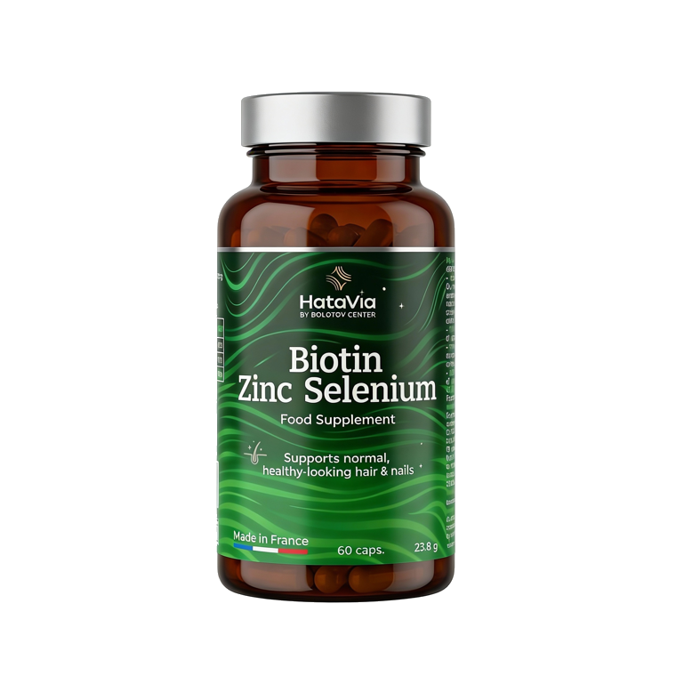
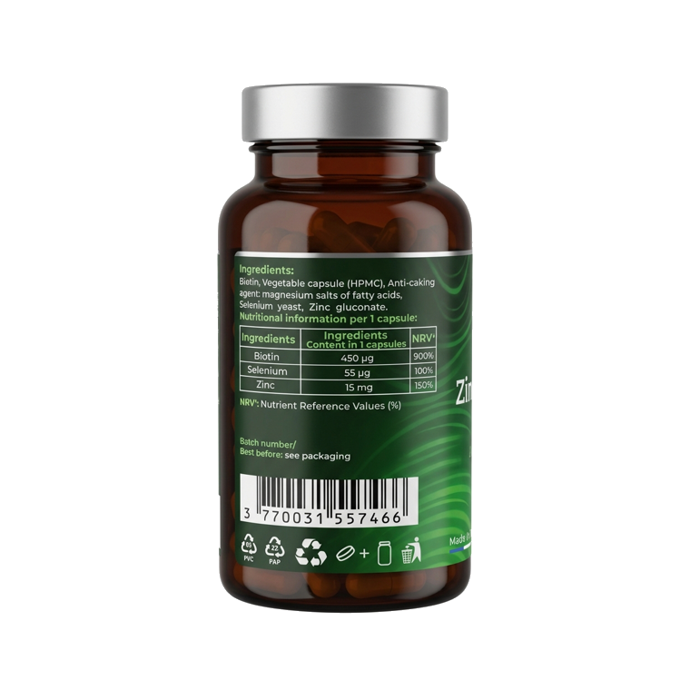
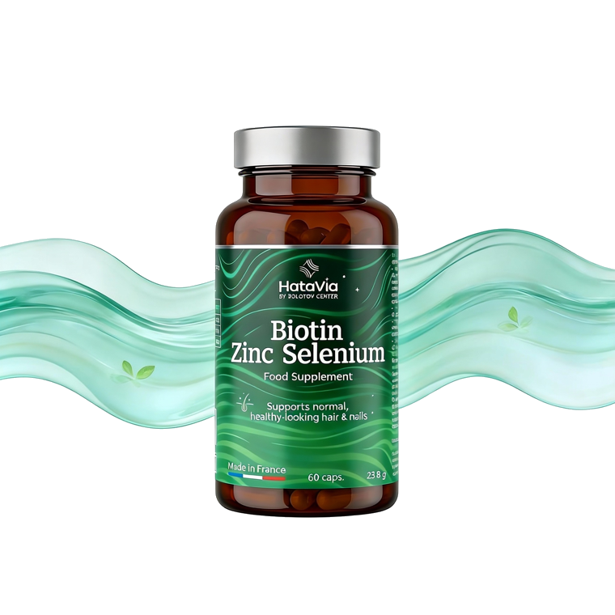
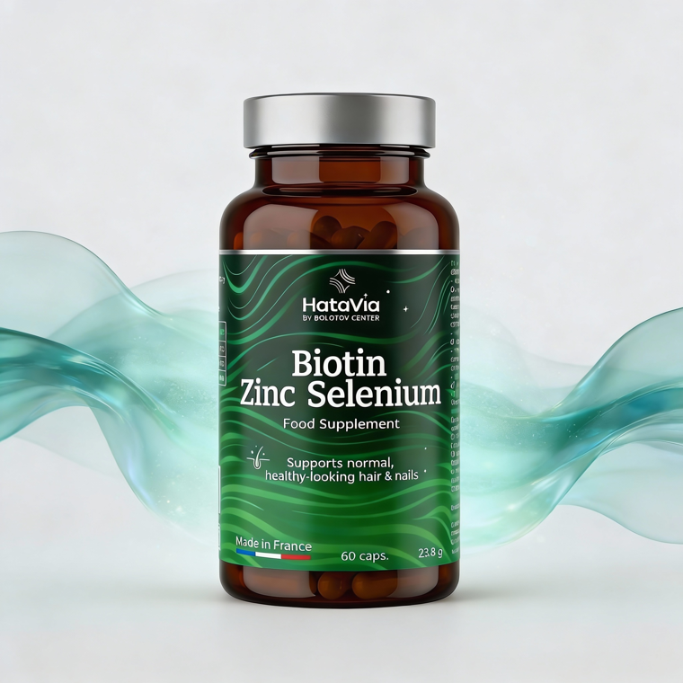
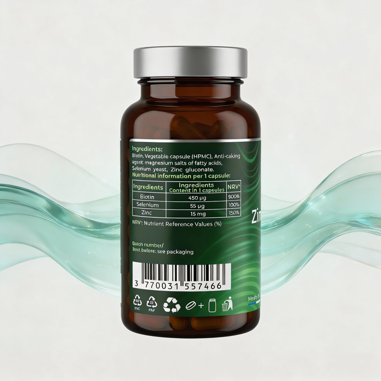

Biotyna, selen i cynk — dla skóry, włosów i paznokci.
Suplement diety łączący biotynę, selen (z drożdży selenowych) i cynk w wygodnych kapsułkach roślinnych.
Połączenie biotyny, selenu (drożdże selenowe) i cynku w jednej kapsułce roślinnej (HPMC).
* Dozwolone oświadczenia zdrowotne dotyczące biotyny, selenu i cynku (Rozporządzenie (UE) nr 432/2012).
Dla osób, które chcą zadbać o kondycję skóry, włosów i paznokci od wewnątrz, uzupełniając dietę o biotynę, selen i cynk.
Indywidualna nietolerancja składników, ciąża, okres karmienia piersią, wiek poniżej 18 lat. Przed zastosowaniem skonsultuj się z lekarzem. Suplement diety, nie jest lekiem.
Biotyna, drożdże selenowe, glukonian cynku, kapsułka roślinna (HPMC), substancja przeciwzbrylająca: sole magnezowe kwasów tłuszczowych.
| Masa netto | 60 kapsułek / 23,8 g |
| Biotyna (w 1 kapsułce) | 450 µg (900% RWS**) |
| Selen | 55 µg (100% RWS**) |
| Cynk | 15 mg (150% RWS**) |
** RWS — referencyjna wartość spożycia. Wyprodukowano we Francji (SAS BIOSYNTHEZ).
Przyjmować 1 kapsułkę dziennie, popijając wodą.
Nie należy przekraczać zalecanej dziennej porcji. Suplement diety nie może być stosowany jako substytut zróżnicowanej diety. Przechowywać w miejscu niedostępnym dla małych dzieci.